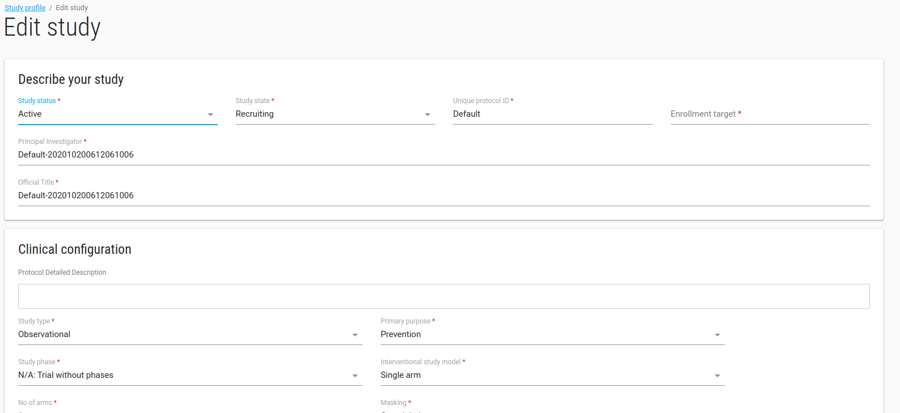
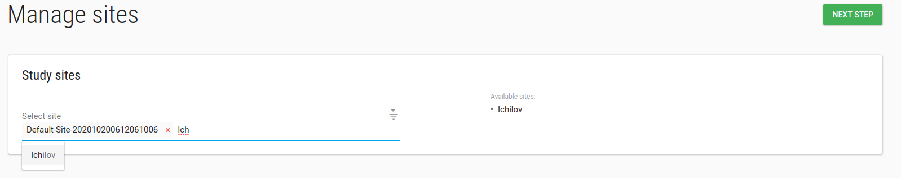

Define your study
After signing up, the system will create your first study called default-XXX.
Study Edit
To edit the study - check it, in ACTIONS click on Edit option.

In edit study window you can define your study profile, definitions and etc.

NOTES:
- Database and EDC URL fields are related to EDC db, if you have EDC (ClinCapture) db you should fill them.
- Enable patient reported outcome module? Check this checkbox if your study has a PRO for patients.
- PRO URL: If study has another PRO then FlaskData fill the PRO URL field with your study's PRO URL.
- Package: There are 3 available packages, Start, Submit and Validate.
- Start - study uses IRB and Forms
- Submit - Flask+Forms+Tools+EDC. Unlimited sites.
- Validate - Flask+Forms+Tools+EDC. Limited to 3 sites.
- Alert data source: Data for alert definitions (If study uses clinCapture you should choose PostgreSQL otherwise choose MongoDB).
- Study subject prefix: Prefix of creation subject label, like study1-001.
- Subject’s IDPs settings: IDP settings for subjects-patients.
When you click SAVE the profile study will be opened.
Study Profile
In the Study Profile page you can see your study's definitions, alert rules, analytic rules, Users, sites and comments.

NOTE: In comments card you can record free text annotations about your study.

In Study Profile page you have ACTIONS green button with manage Users and manage sites options.
Study manage Users
In Manage Users page you can add/remove User from this study.
To add a new User to the study - you need to create the User first.

Type any part of the User's name in the Select Users box and choose the relevant User.

Click NEXT STEP, Welcoma emails will be sent to Users' emails.
Study manage sites
In Manage sites page you can add/remove site from this study.
To add a new site to study - you need create the site first.

Type any part of the site's name in the Select sites box and choose the relevant site.
Click NEXT STEP